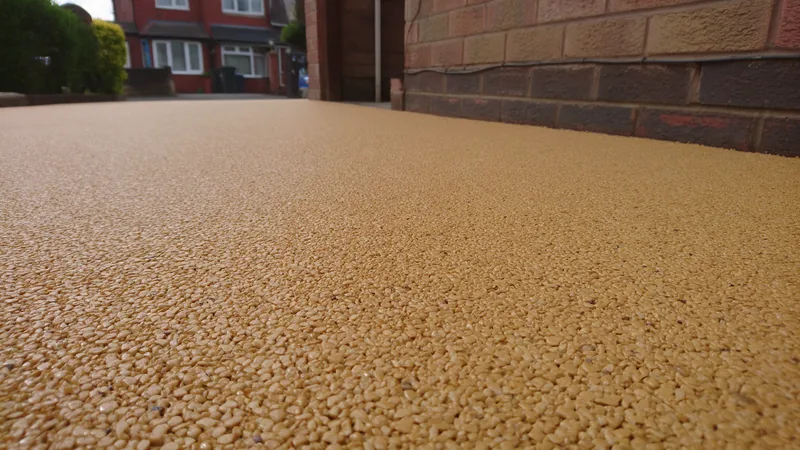
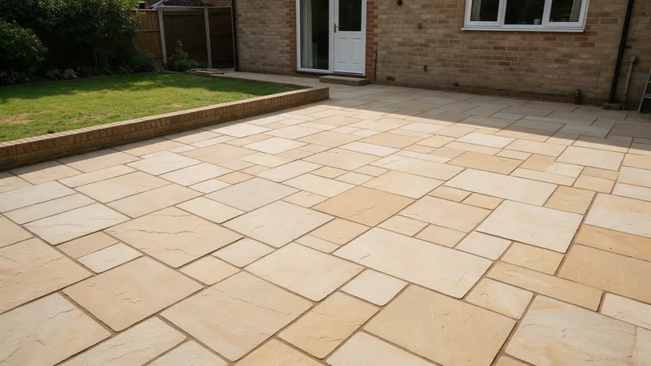
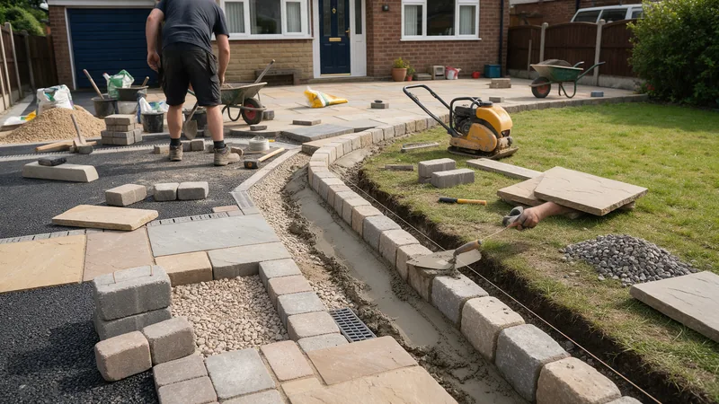

Our work
Twelve sample jobs.
Setthorn is a demo, so none of these happened. They are the twelve jobs a driveways and patios firm round here would actually have on in a month, with pictures generated for this site rather than taken on a job.
 Generated photoBlock paving going down in herringboneHorwich Sample
Generated photoBlock paving going down in herringboneHorwich Sample Generated photoCharcoal blocks, buff sett borderWesthoughton Sample
Generated photoCharcoal blocks, buff sett borderWesthoughton Sample Generated photoTarmac with a block edgeFarnworth Sample
Generated photoTarmac with a block edgeFarnworth Sample
Generated photoResin bound over a sound baseBlackrod Sample Generated photoSub base in, nothing pretty yetLittle Lever Sample
Generated photoSub base in, nothing pretty yetLittle Lever Sample
Generated photoSandstone off the back doorHorwich Sample Generated photoFlags on a full mortar bedWesthoughton Sample
Generated photoFlags on a full mortar bedWesthoughton Sample Generated photoDropped kerb finished offFarnworth Sample
Generated photoDropped kerb finished offFarnworth Sample Generated photoChannel drain at the garageLittle Lever Sample
Generated photoChannel drain at the garageLittle Lever Sample Generated photoSoakaway crates going inBlackrod Sample
Generated photoSoakaway crates going inBlackrod Sample Generated photoHalf washed, half notHorwich Sample
Generated photoHalf washed, half notHorwich Sample Generated photoSunken patch lifted and relaidWesthoughton Sample
Generated photoSunken patch lifted and relaidWesthoughton SampleFilter them, or tap one for the detail. Every one is a made up sample.
What you are looking at
Why a real firm should show the muddy ones.
Every paving firm shows the same photograph: a finished drive in sunshine with a clean car on it. They all look the same, and none of them tells you anything about whether the firm can build a drive.
The pictures worth showing are the ones from day two. The dig out, the sub base being whacked down, the edge course haunched in concrete, the soakaway crates going in. On a real site this page would be your own phone photographs of exactly that, with a line each about what was found underneath. That is the page that wins jobs off the firm who only photographs the sunshine.

Generated photoGenerated for this demo.
Want one of these looking at?
Tell us what is there now and your postcode and we will come and look.